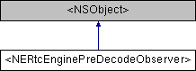

NERtc iOS SDK
V5.5.10
构造函数
|
所有成员列表
<NERtcEnginePreDecodeObserver>协议 参考
#import <
NERtcEngineDelegate.h
>
类 <NERtcEnginePreDecodeObserver> 继承关系图:

构造函数
(void)
-
onNERtcEnginePreDecoderFrame:
解码前媒体数据回调。
更多...
函数文档
◆
onNERtcEnginePreDecoderFrame:
- (void) onNERtcEnginePreDecoderFrame:
(
NERtcPreDecoderFrameInfo
*)
preDecoderFrame
optional
解码前媒体数据回调。
调用
INERtcEngineEx#setPreDecodeObserver:
方法注册解码前媒体数据观测器后，SDK会触发该回调，可以通过返回的用户 UID、媒体数据类型、数据长度等信息对媒体数据自行编码。
自从
V4.6.29
使用前提
请在
NERtcEngineDelegate
接口类中通过
INERtcEngineEx#setPreDecodeObserver:
接口设置回调监听。
参数说明
参数名称
类型
描述
preDecodeFrame
NERtcPreDecodeFrameInfo *
解码前媒体数据。
该协议的文档由以下文件生成:
include/
NERtcEngineDelegate.h
NERtcEnginePreDecodeObserver
制作者
1.9.1
 1.9.1
1.9.1